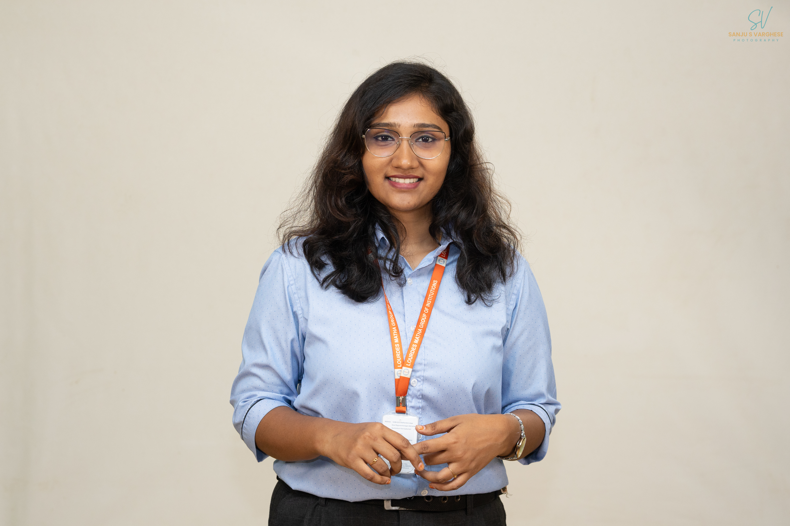

Client Relationship Manager • ScriptWriter • Anchor
View My Work
I am a motivated and people-focused Client Relationship Manager with hands-on experience in client handling, requirement gathering, and smooth coordination between clients and internal teams. With a B.Sc in Computer Science and currently pursuing MCA, I have a strong technical foundation combined with practical industry knowledge. I am fluent in Tamil, English, and Malayalam, enabling me to connect effectively with diverse clients. Passionate about communication, digital media, and continuous learning, I am always open to new opportunities and growth.
Client Relationship Manager – Cape Comorin Media (2 Months) Handled day-to-day client communication and relationship management Understood client needs and coordinated with internal teams Assisted in branding, digital marketing, and media communication Maintained long-term professional client relationships Supported follow-ups, reports, and smooth project communication
Anchor / Event Host Hosted stage events, cultural programs, and audience-engagement activities Presented content with clarity, confidence, and strong on-stage presence Coordinated with the production and technical teams for smooth event flow Interacted with audiences and guests to maintain an energetic atmosphere Assisted in scripting, event planning, and overall program coordination
Script Writer / Client Communications Wrote engaging scripts for branding and digital marketing videos Understood client requirements and converted them into effective storylines Collaborated with creative and production teams for smooth execution Supported content planning, revisions, and communication with clients Helped maintain long-term professional relationships through structured communication
Email me at: abinayasatheeshkumar29@gmail.com